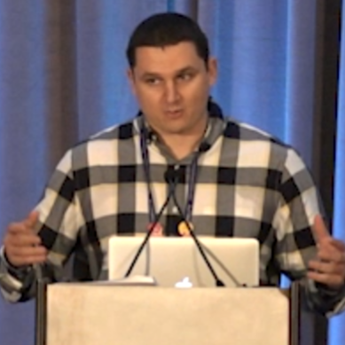

Rudy
Jun 17, 2021 10:00 AM
 Hello, and welcome to Fishbowl Day 8!
Hello, and welcome to Fishbowl Day 8! 
 8️⃣
Topic: How software development is taught
❗ Idea Source / Discussion Context: https://github.com/AsafGartner/hmn_fishbowl/discussions/35
8️⃣
Topic: How software development is taught
❗ Idea Source / Discussion Context: https://github.com/AsafGartner/hmn_fishbowl/discussions/35
 Relevant additional context: https://handmade.network/podcast/ep/eeac46c9-5e90-4b1c-9104-cff49734764d
(edited)
Relevant additional context: https://handmade.network/podcast/ep/eeac46c9-5e90-4b1c-9104-cff49734764d
(edited)
 Please read over the discussion context if you haven't already. It is recommended that you also listened to the
Please read over the discussion context if you haven't already. It is recommended that you also listened to the  )
)


 Is there anything higher learning institutions, books, training courses, i.e. existing paths to learn software development, get right?
Is there anything higher learning institutions, books, training courses, i.e. existing paths to learn software development, get right?